library(tidyverse)5 Bivariate Analysis
Before you start working on this chapter, you need to do the following. If you need a help for each step, see Section 3.1.
Launch RStudio.
Load
POL232.RDatainto your current R session.Prepare an R Script to save all your work in this chapter. I suggest you name it “
POL232_Lab#_YourLastName.R” in which#is the number of the current lab session.You also need to load
tidyversepackage into your current R session (Section 1.4.2).
I suggest you actually write the R functions used below in your R script instead of copying and pasting them. See Section 3.1.5 for why.
I also suggest you sufficiently annotate your R script (i.e. leaving notes after the
#sign) so that you can use your R script as your reference when you work on tutorial exercises or data analysis paper assignments. In other words, this R script will be your notes for this chapter.
5.1 Mosaic Plot
When two variables are both categorical variables, we may use a mosaic plot to visualize the relationship.
5.1.1 New Package: ggmosaic
To draw a mosaic plot, we also need a new package ggmosaic, which works with the ggplot() function.
Install ggmosaic first if it has not been downloaded and installed on your computer. See Section 1.4.1 for how to install an R package.
Then, load ggmosaic (Section 1.4.2).
library(ggmosaic)5.1.2 Prepare Variables
We are going to draw a mosaic plot for satisfied_fedgovt and percep_economy_cps from the ces2019 data frame. This can be considered as a simple test of the theory of economic voting. In this analysis, percep_economy_cps is the independent variable, and satisfied_fedgovt is the dependent variable.
Before visualizing the relationship, we first edit these two variables. Recall what we did for percep_economy_cps in Section 4.2. We change the names of their categories or levels to simpler ones (Section 4.2.6) and change the order of the categories or levels (Section 4.2.5).
To change the names of the categories or levels, we use the fct_recode() function (Section 4.2.6). Recall its basic syntax. (Don’t execute the following code, which is intended to show you the syntax only.)
fct_recode(factor_variable,
"New Name of Level 1" = "Original Name of Level 1",
"New Name of Level 2" = "Original Name of Level 2",
"New Name of Level 3" = "Original Name of Level 3") To change the order of categories or levels, we use the fct_relevel() function (Section 4.2.5). Recall the following basic syntax. (Once again, don’t run the following code, which is intended to show you the syntax only.)
fct_relevel(factor_variable,
"First Level", "Second Level", "Third Level")Let’s edit precep_economy_cps using these functions. In Section 4.2, we created a new variable to reflect the edits, but here we instead update percep_economy_cps with these edits. In the following code, the left hand side of = in the mutate() function is percep_economy_cps instead of precep_economy_cps2 or percep_economy_cps3 used in the previous lab session. In this way, we can update the content of percep_economy_cps.
ces2019 <- mutate(ces2019,
percep_economy_cps = fct_recode(percep_economy_cps,
"Worse" = "(2) Worse",
"Same" = "(3) About the same",
"Better" = "(1) Better") )ces2019 <- mutate(ces2019,
percep_economy_cps = fct_relevel(percep_economy_cps,
"Worse", "Same", "Better") )We also edit satisfied_fedgovt as follows.
ces2019 <- mutate(ces2019,
satisfied_fedgovt = fct_recode(satisfied_fedgovt,
"Not At All" = "(4) Not satisfied at all",
"Not Very" = "(3) Not very satisfied",
"Fairly" = "(2) Fairly satisfied",
"Very" = "(1) Very satisfied") )ces2019 <- mutate(ces2019,
satisfied_fedgovt = fct_relevel(satisfied_fedgovt,
"Not At All", "Not Very", "Fairly", "Very")) 5.1.3 Draw a Mosaic Plot: ggplot() + geom_mosaic()
Let’s draw a mosaic plot for percep_economy_cps and satisfied_govt. Below is the minimum specification for the ggplot() + geom_mosaic() functions. Read the comments in the code below for an explanation for the basic syntax.
# Specify the data frame used inside ggplot().
ggplot(ces2019) + # aes() is now specified in geom_mosaic() instead of ggplot().
geom_mosaic( aes(x = product(percep_economy_cps), # x = product(independent_variable)
fill = satisfied_fedgovt) ) # fill = dependent_variable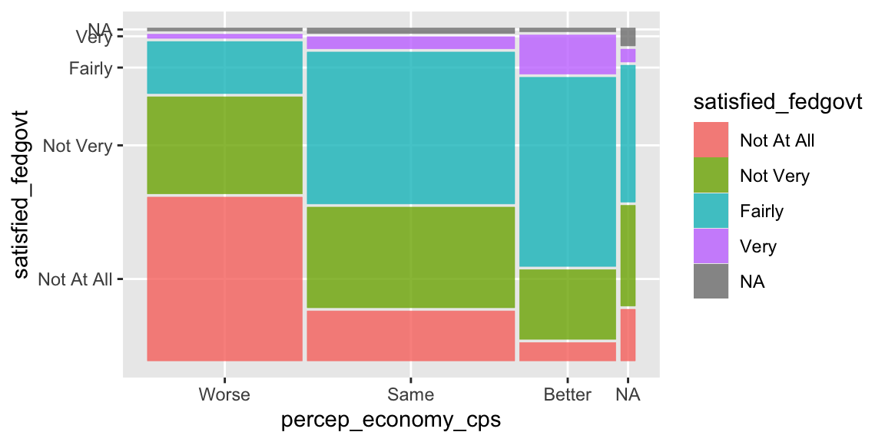
5.1.4 Remove NA: drop_na()
The mosaic plot drawn above includes missing observations (NA). As we did before in Section 4.2.7, let’s remove these missing observations using the drop_na() function. Recall the basic syntax of the drop_na() function below.
drop_na(name_of_data_frame, name_of_variable)The drop_na() function looks for the observations for which the variable in the second argument (name_of_variable above) is missing (NA) and removes these observations from the data frame in the first argument (name_of_data_frame). So in the code below, the drop_na() function looks for the observations in ces2019 for which percep_economy_cps is missing (NA), and removes these observations from ces2019.
drop_na(ces2019, percep_economy_cps)Use drop_na(ces2019, percep_economy_cps) instead of ces2019 inside the ggplot() function.
# drop_na() here removes the missing observations (NA) for percep_economy_cps from ces2019.
ggplot( drop_na(ces2019, percep_economy_cps) ) +
geom_mosaic( aes(x = product(percep_economy_cps),
fill = satisfied_fedgovt) ) 
As you see in the above plot, now the missing observations for percep_economy_cps were removed, but those for satisfied_fedgovt still remain. To remove the missing observations for satisfied_fedgovt, we also need to include this variable in the drop_na() function.
# drop_na() here removes the missing observations (NA) for both percep_economy_cps
# and satisfied_fedgovt from ces2019.
ggplot( drop_na(ces2019, percep_economy_cps, satisfied_fedgovt) ) +
geom_mosaic( aes(x = product(percep_economy_cps),
fill = satisfied_fedgovt) ) 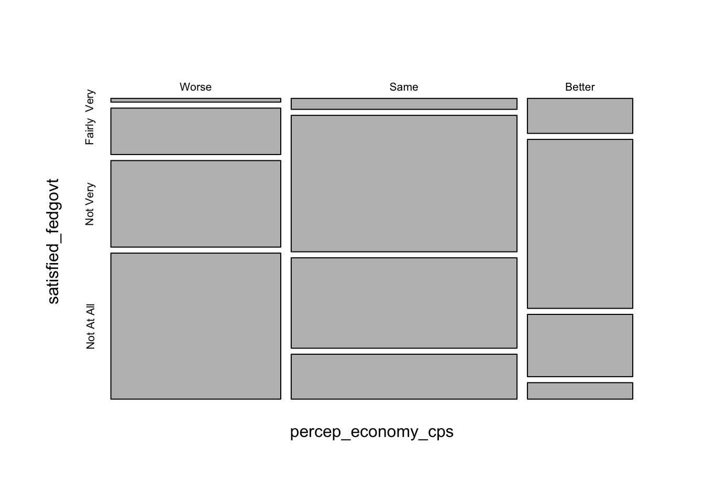
Now the missing observations for satisfied_fedgove are removed as well.
5.1.5 Other Edits: show.legend, scale_fill_manual()
Perhaps we don’t need the legend, as the category names are also shown on the vertical axis. We can remove the legend by specifying show.legend = FALSE in the geom_mosaic() function.
ggplot(drop_na(ces2019, percep_economy_cps, satisfied_fedgovt)) +
geom_mosaic(aes(x = product(percep_economy_cps), fill = satisfied_fedgovt),
show.legend = FALSE) # show.legend = FALSE removes the legend.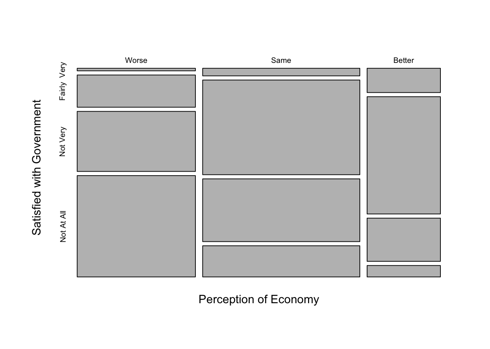
You can also specify the colors of the mosaic tiles by adding the scale_fill_manual() function. Recall that you can look up the names of the colors used in R online, for example, here and here.
ggplot(drop_na(ces2019, percep_economy_cps, satisfied_fedgovt)) +
geom_mosaic(aes(x = product(percep_economy_cps), fill = satisfied_fedgovt),
show.legend = FALSE) +
# Below, you need to specify the colors for each category of your dependent variable.
# Don't forget to include the names of the colors in c().
scale_fill_manual(values = c("lightsteelblue2", "steelblue1", "steelblue3", "steelblue4"))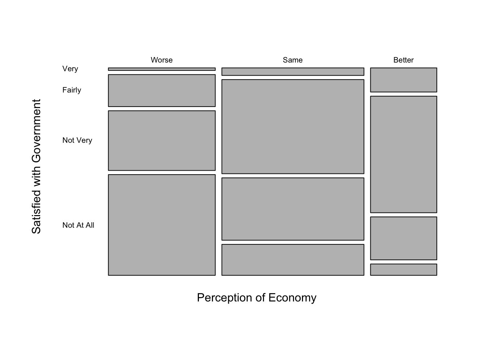
You can of course use the functions you learned before to further edit the plot. For example, below I added the labels for both y and x axes.
ggplot(drop_na(ces2019, percep_economy_cps, satisfied_fedgovt)) +
geom_mosaic(aes(x = product(percep_economy_cps), fill = satisfied_fedgovt),
show.legend = FALSE) +
scale_fill_manual(values = c("lightsteelblue2", "steelblue1", "steelblue3", "steelblue4")) +
ylab("Satisfied with Government") + # Change the label at y-axis.
xlab("Perception of Economy") # Change the label at x-axis.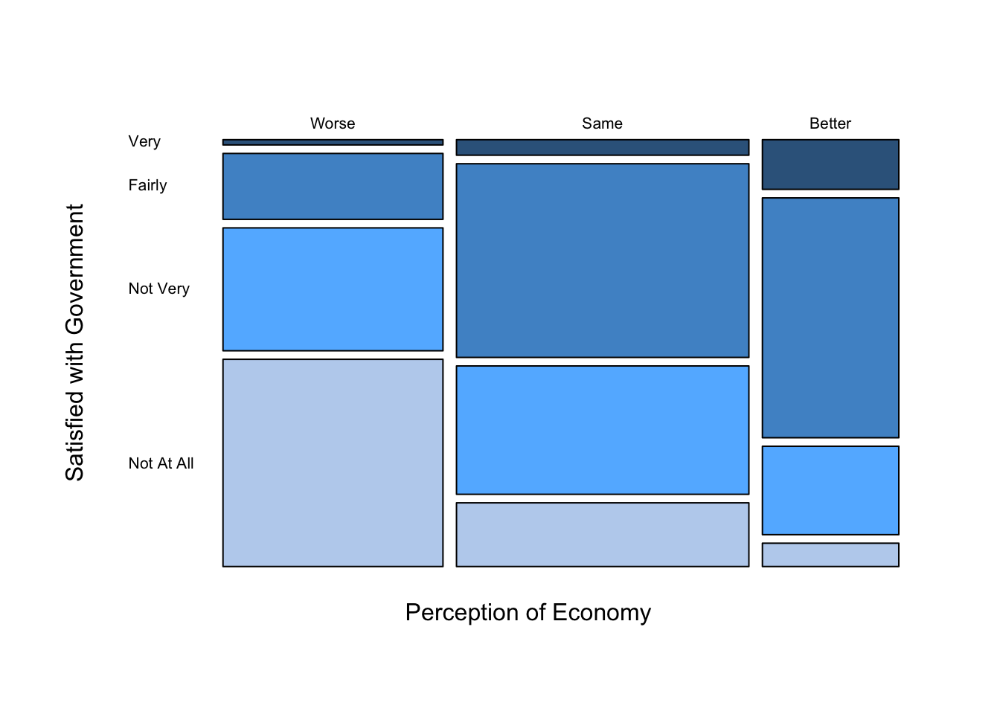
5.2 Cross Tabulation
A mosaic plot is a wonderful visualization, but we may also want to know the actual proportions of each tile. For this purpose, we may use R to produce a cross tabulation (or a crosstab). One way to do this requires two steps. First, we use the table() function to produce a cross tabulation in terms of the number of observations. Then, we apply the prop.table() function to transform the output of the table() function to the crosstab in terms of proportion or percentage.
5.2.1 Cross Tabulation in Number of Observations: table()
A basic syntax of the table() function is as follows.
table(variable_in_rows, variable_in_columns)In other words, the first argument of the table() function is the variable that will appear in the rows, and the second argument is the variable in the columns. For the current purpose of examining the theory of economic voting, we want our dependent variable to appear in rows and independent variable in columns. Hence, the basic syntax of the table() function may also be written as below.
table(dependent_variable, independent_variable)Let’s apply this function to percep_economy_cps and satisfied_fedgovt.
table(ces2019$satisfied_fedgovt, # table(dependent_variable, independent_variable)
ces2019$percep_economy_cps)
Worse Same Better
Not At All 673 275 47
Not Very 399 554 178
Fairly 214 836 483
Very 17 67 100You may have noticed that the categories of the dependent variable appear in rows in the order of the categories (or levels) from top to bottom, which is the opposite to the order of appearance in the mosaic plot. To show the dependent variable in the same order as in the mosaic plot, we need to reverse the order of categories (or levels) of satisfied_fedgovt. Let’s create a new variable satisfied_fedgovt2 in which the order of categories (levels) is reversed. See Section 4.2.5 for how to change the order of categories (levels).
ces2019 <- mutate( ces2019,
satisfied_fedgovt2 = fct_relevel(satisfied_fedgovt,
"Very", "Fairly", "Not Very", "Not At All" ) ) Check the new order by the levels() function.
levels(ces2019$satisfied_fedgovt2)[1] "Very" "Fairly" "Not Very" "Not At All"Apply the table() function to percep_economy_cps and the new variable satisfied_fedgovt2.
table( ces2019$satisfied_fedgovt2, # table(dependent_variable, independent_variable)
ces2019$percep_economy_cps )
Worse Same Better
Very 17 67 100
Fairly 214 836 483
Not Very 399 554 178
Not At All 673 275 47Now the categories of satisfied_fedgovt2 appear in the same way as in the mosaic plot that we produced in Section 5.1.
5.2.2 Cross Tabulation in Proportion: prop_table()
Since the crosstab derived above is in number of observations, let’s convert it to one in terms of proportion. We can do this by using the prop.table() function with the output of the table() function as its argument.
For this purpose, first assign the output of the table() function to a new object called tab.
# Use the assignment operator ("<-") to assign the output of the table() function
tab <- table( ces2019$satisfied_fedgovt2, # to a new object named "tab."
ces2019$percep_economy_cps ) Then, use the prop.table() function as below.
# The first argument of prop.table() is the output of the table() function.
# The second argument specifies the type of proportion to be derived.
prop.table(tab, 2) # The second argument 2 = column proportions are calculated.
Worse Same Better
Very 0.01304682 0.03868360 0.12376238
Fairly 0.16423638 0.48267898 0.59777228
Not Very 0.30621642 0.31986143 0.22029703
Not At All 0.51650038 0.15877598 0.05816832Above we derived the crosstab in terms of proportion. The second argument of the prop.table() function specifies the type of proportion to be derived. If this is 2, the prop.table() function calculates column proportions — if we add up the proportions within each column, they will sum to one. This is what we want for our present purpose.
But we can also compute row proportions — if we add up the proportions within each row, they will sum to one. We can do this by specifying 1 in the second argument of the prop.table() function.
prop.table(tab, 1) # The second argument 1 = row proportions are calculated.
Worse Same Better
Very 0.09239130 0.36413043 0.54347826
Fairly 0.13959556 0.54533594 0.31506849
Not Very 0.35278515 0.48983201 0.15738285
Not At All 0.67638191 0.27638191 0.04723618Without the second argument, the prop.table() function calculates cell proportions — if we add up the proportions of all of the cells, they will sum to one.
prop.table(tab) # Without second argument = cell proportions are calculated.
Worse Same Better
Very 0.004423627 0.017434296 0.026021337
Fairly 0.055685662 0.217538381 0.125683060
Not Very 0.103825137 0.144158210 0.046317981
Not At All 0.175123601 0.071558678 0.012230029For our current purpose, what we need is column proportions, therefore, we specify 2 for the second argument of the prop.table() function.
5.2.3 Add Column (or Row) Totals to Crosstab
Since we computed the column proportions, we may also want to add the column totals, which must be 1 for all columns, for clarity. We can use the addmargins() function for this purpose.
We assign the output of the prop.table() function to a new object, and use this new object as the first argument of the addmargins() function.
In the code below, I assign the output of the prop.table() function to a new object, called ptab, and use ptab as the first argument of the addmargins() function. The second argument of the addmargins() function is specified at 1, which instructs R to compute total of values for each column, or equivalently, across rows.
# Use the assignment operator ("<-") to assign the output of
# the prop.table() function to a new object named "ptab."
ptab <- prop.table(tab, 2)
# The second argument of the addmargins() function is 1
# = values are summed up across rows = total for each column.
addmargins(ptab, 1)
Worse Same Better
Very 0.01304682 0.03868360 0.12376238
Fairly 0.16423638 0.48267898 0.59777228
Not Very 0.30621642 0.31986143 0.22029703
Not At All 0.51650038 0.15877598 0.05816832
Sum 1.00000000 1.00000000 1.00000000As you can see, column totals are 1 for all columns. Adding column totals makes it clear that what we have in our crosstab are column proportions.
As you may expect, if we specify the second argument of the addmargins() function at 2, R will calculate total of values for each row, or equivalently, across columns.
# The second argument of the addmargins() function is 2
# = values are summed up across columns = total for each row.
addmargins(ptab, 2)
Worse Same Better Sum
Very 0.01304682 0.03868360 0.12376238 0.17549279
Fairly 0.16423638 0.48267898 0.59777228 1.24468764
Not Very 0.30621642 0.31986143 0.22029703 0.84637489
Not At All 0.51650038 0.15877598 0.05816832 0.733444685.2.4 Round Values in Crosstab
In the above crosstab, the values have too many decimal places. We may want to round them to fewer decimal places. We can use the round() function for this purpose. A basic syntax of the round() function is as follows.
round(object, number-of-desired-decimal-places) It rounds the object specified in its first argument to the number of decimal places specified in its second argument.
In the code below, I assign the output of the addmargins() function to a new object, called ptab_total, and use ptab_total as the first argument of the round() function. The second argument of the round() function is specified at 2.
ptab_total <- addmargins(ptab, 1)
round(ptab_total, 2)
Worse Same Better
Very 0.01 0.04 0.12
Fairly 0.16 0.48 0.60
Not Very 0.31 0.32 0.22
Not At All 0.52 0.16 0.06
Sum 1.00 1.00 1.00Since the number specified in the second argument is 2, the values in the crosstab are rounded to two decimal places. By changing the number in the second argument, we can round the values in the corsstab to different decimal places. For example, below we round them to four decimal places.
round(ptab_total, 4)
Worse Same Better
Very 0.0130 0.0387 0.1238
Fairly 0.1642 0.4827 0.5978
Not Very 0.3062 0.3199 0.2203
Not At All 0.5165 0.1588 0.0582
Sum 1.0000 1.0000 1.00005.2.5 Cross Tabulation in Percentage
The crosstab derived above is in terms of proportion. We can change this to one in terms of percentage by simply multiplying the result by 100.
round(ptab_total, 4) * 100 # We multiply the output of round(ptab_total, 4) by 100.
Worse Same Better
Very 1.30 3.87 12.38
Fairly 16.42 48.27 59.78
Not Very 30.62 31.99 22.03
Not At All 51.65 15.88 5.82
Sum 100.00 100.00 100.00This crosstab shows the column percentage of each tile for the mosaic plot drawn before in Section 5.1.
5.2.6 Sequential Operations on R Objects
Note that when we derived the crosstab above, we created R objects sequentially by applying different R functions in each step. Below is a summary of these sequantial operations.
tab <- table( ces2019$satisfied_fedgovt2,
ces2019$percep_economy_cps )
ptab <- prop.table(tab, 2)
ptab_total <- addmargins(ptab, 1)
round(ptab_total, 4) * 100
Worse Same Better
Very 1.30 3.87 12.38
Fairly 16.42 48.27 59.78
Not Very 30.62 31.99 22.03
Not At All 51.65 15.88 5.82
Sum 100.00 100.00 100.00Specifically, we first created an object called tab by the table() function. Then, we applied the prop.table() function to tab to create a new object named ptab. After that, the addmargins() function was applied to ptab to create ptab_total. Finally, the round function was applied to ptab_total to produce the crosstab shown above.
It is not unusual to use sequantial operations like this to edit R objects to produce the final object that we need.
5.3 Scatterplot
When two variables are both quantitative variables taking many values, we may use a scatterplot to visualize the relationship.
5.3.1 Basic Scatterplot: ggplot() + geom_point()
Below we will draw a scatterplot for democrat and ranney3_gub_prop from the usstates2020 data frame. As you can see in the codebook for usstates2020, democrat is the percent of Democratic identifiers — individuals who identify themselves as Democrats — in each state, and ranney3_gub_prop is the proportion of two-party vote for a democratic gubernatorial candidate. We would expect a positive relationship between these two variables. Let’s see whether there is indeed a positive relationship by drawing a scatterplot.
We can draw a scatterplot by adding the geom_point() function to the ggplot() function. Note that the aes() function is the argument of the ggplot() function this time. Within the aes() function, we need to specify the independent variable (x = ) and the dependent variable (y = ).
# aes() is specified in the ggplot() function. It should indicate the independent
ggplot(usstates2010, # variable (x = ) and the dependent variable (y = ).
aes(x = democrat, y = ranney3_gub_prop)) +
geom_point()Warning: Removed 2 rows containing missing values or values outside the scale range
(`geom_point()`).
The scatterplot above suggests that there seems to be a positive relationship, but there are some outliers in the upper left quadrant — some states recorded a very high two party vote share for a Democratic gubernatorial candidate even with a relatively low proportion of Democratic identifiers. The warning message above indicates that there are two observations removed from the visualization because they have missing values for either ranney3_gub_prop or democrat.
We can change the shape, size, and color of the points by specifying the shape, col, and size arguments in the geom_point() function as follows.
ggplot( usstates2010,
aes(x = democrat, y = ranney3_gub_prop) ) +
geom_point( shape = 21, col = "blue", size = 3 ) # shape, col, and size arguments added.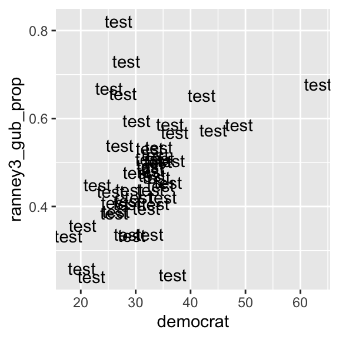
R uses numbers and a few symbols to specify the shape of points. You can look up the shape of points used in R online, for example here (see Figure 5.6, and ignore the rest). As we have already seen, you can find the colors used in R online as well, for example, here and here. You may specify a different number for size to see how the points will change.
We may want to display both variables in percentage by multiplying ranney3_gub_prop by 100.
ggplot( usstates2010, # ranney3_gub_prop is multiplied by 100.
aes(x = democrat, y = ranney3_gub_prop * 100) ) +
geom_point( shape = 21, col = "blue", size = 3 )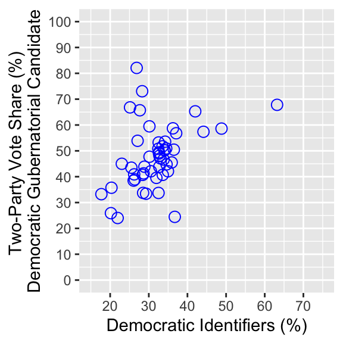
You can further edit this scatterplot using the functions you have learned. See an example below.
ggplot( usstates2010,
aes(x = democrat, y = ranney3_gub_prop * 100) ) +
geom_point( shape = 21, col = "blue", size = 3 ) +
xlab("Democratic Identifiers (%)") +
ylab("Two-Party Vote Share (%) \nDemocratic Gubernatorial Candidate") +
coord_cartesian(ylim = c(0, 100), xlim=c(15,75)) +
scale_x_continuous(breaks = seq(0, 100, 10)) +
scale_y_continuous(breaks = seq(0, 100, 10))
5.3.2 Scatterplot by Name of Observations: ggplot() + geom_text()
So far we have seen scatterplots by points. We can also use texts instead of points to draw scatterplots. For this purpose, we replace the geom_point() function with the geom_text() function and specify the texts used in a scatterplot in the label argument in the aes() function inside the ggplot() function.
See the example below.
ggplot(usstates2010,
aes(x = democrat, y = ranney3_gub_prop,
label = "test") ) + # Specify texts in the label argument in the aes() function.
geom_text() # Then, use the geom_text() function.If we specify a single text for the label argument as in the above example, that text is used for all data points. In the above example, I specified label = "test", then as you can see, test was used for all data points.
Or we can specify a variable in the data frame for the label argument. Then, the values of this variable are used for each observation. For the present example, it is useful if we have the name of states for each data point. In the usstates2010 data frame, state is a variable on the name of states, and st is state postal codes. Look up these variables in the usstates2010 data frame by the View() function (alternatively, you can click the name of the data frame in the Environment tab in the upper right pane).
View(usstates2010)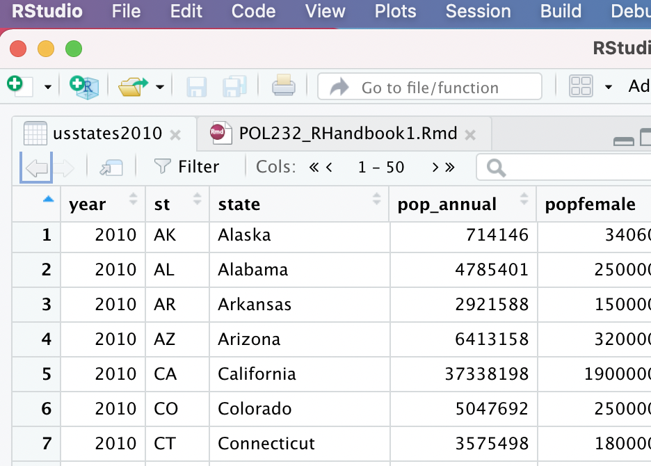
Below I used st in the label argument.
ggplot(usstates2010,
aes(x = democrat, y = ranney3_gub_prop,
label = st) ) + # Specify a variable in the label argument in the aes() function.
geom_text() # Then, use the geom_text() function.
We can change the size and color of texts by specifying the size and col arguments in the geom_text() function as follows.
ggplot( usstates2010,
aes( x = democrat, y = ranney3_gub_prop,
label = st ) ) +
# Try other numbers for the size argument to see
geom_text( size=2.5, col="blue" ) # how the size of texts changes.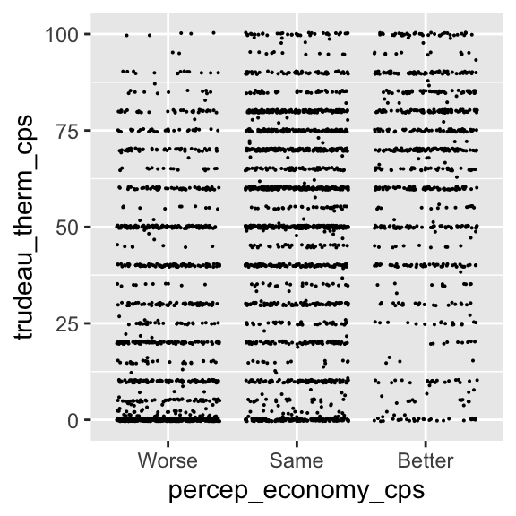
Now we can see that the outliers in the upper left quadrant are Colorado (CO), West Virginia (WV), Montana (MT), and Arkansas (AR).
We can of course further edit this scatterplot using the functions we have learned.
5.4 Line Chart & Conditional Means
Now we consider the case in which the dependent variable (y) is a quantitative variable and the independent variable (x) is a categorical variable or a quantitative variable taking a relatively small number of values. In this combination of the types of variables, we may examine the conditional distributions of y across different values of x. In this example, we examine the relationship between percep_economy_cps and trudeau_therm_cps in the ces2019 data frame. This is another simple test of the theory of economic voting.
First, let’s try a scatterplot.
ggplot( ces2019,
aes( x = percep_economy_cps, y = trudeau_therm_cps ) ) +
geom_point( size = 0.05 )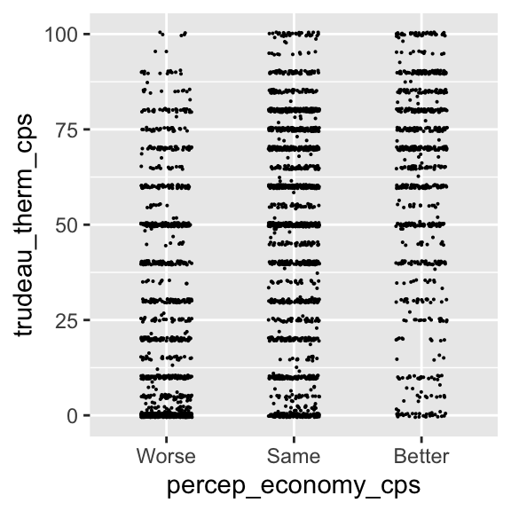
Remove the missing observations from the plot using the drop_na() function.
ggplot( drop_na(ces2019, percep_economy_cps), # Use drop_na() to remove missing observations.
aes( x = percep_economy_cps, y = trudeau_therm_cps ) ) +
geom_point( size = 0.05 )
For this combination of variables, this scatterplot doesn’t seem to be very informative.
5.4.1 Jittered Scatterplot: ggplot() + geom_jitter()
One problem in the above plot is that there seem to be many observations taking the same or very close values, so that multiple observations fall upon exactly the same or very close place. We cannot gauge how many observations are taking which values in this plot.
One possible remedy is to jitter the plots. By jittering, we add some random noise to the values of each point, so that the observations taking the same value are spread around this value. To draw a jittered scatterplot, we replace the geom_point() function with the geom_jitter() function.
ggplot( drop_na(ces2019, percep_economy_cps),
aes( x = percep_economy_cps, y = trudeau_therm_cps ) ) +
geom_jitter( size = 0.05 )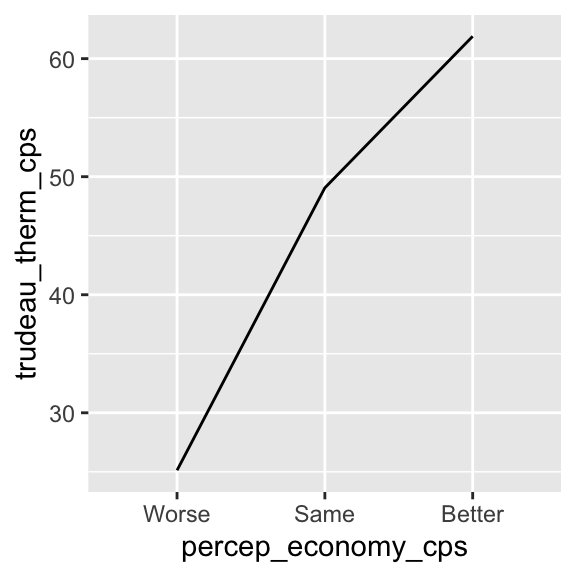
As you can see, now the points taking the same values are spread around those values. There seems to be too much jittering in this plot, however. We can control the width and height arguments of the geom_jitter() function to control the amount of random noise added to each point. The width argument controls the amount of noise in the horizontal direction, and the height argument in the vertical direction.
ggplot( drop_na(ces2019, percep_economy_cps),
aes( x = percep_economy_cps, y = trudeau_therm_cps ) ) +
# width = the amount of noise added in the horizontal direction.
# height = the amount of noise in the vertical direction.
geom_jitter( size = 0.05, width = 0.2, height = 0.5 ) 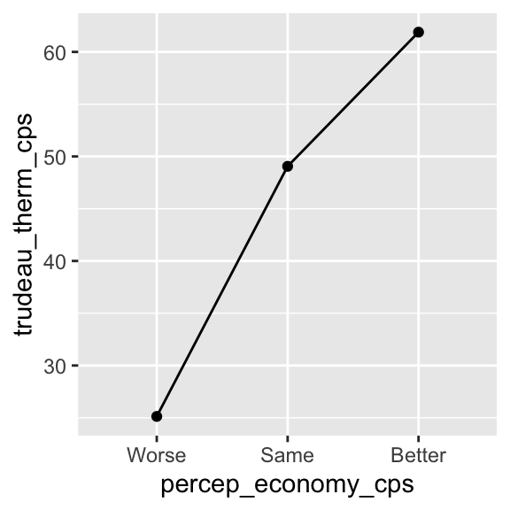
In the above jittered plot, the observations are nicely spread out, so that we can gauge the number of observations falling on the same or similar values more intuitively. Now we can compare the conditional distributions of y across different values of x. From this comparison, there seems to be a positive relationship between these two variables. However, the relationship between these two variables may not be very clear from this visualization. Perhaps, it’s better to SUMMARIZE the conditional distributions of y across different values of x.
5.4.2 Conditional Means: ggplot() + geom_point()
First, let’s draw the conditional means of y = trudeau_therm_cps given x = percep_economy_cps. We can do this by modifying the geom_point() function. See an example below.
ggplot( drop_na(ces2019, percep_economy_cps),
aes( x = percep_economy_cps, y = trudeau_therm_cps,
group = 1) ) + # group = 1 is needed to draw summary statistics.
# stat = "summary" tells geom_point() to draw summary statistics.
# fun = mean specifies that the mean is used as the summary statistics.
geom_point( stat = "summary", fun = mean )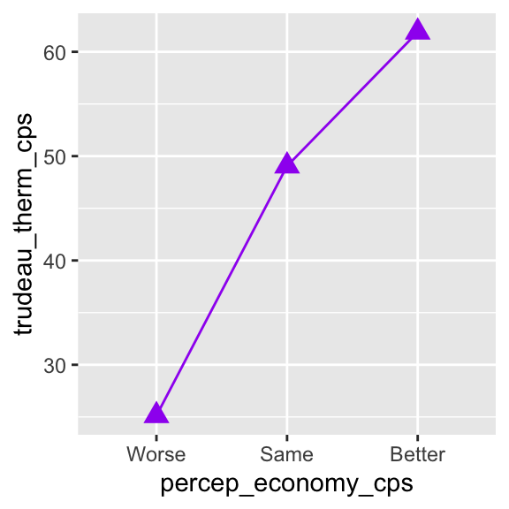
The stat = "summary" argument tells the geom_point() function to draw summary statistics instead of each observation point. The fun = mean argument tells the geom_point() function to use the (conditional) mean for the summary statistics. We also need to specify group = 1 in the aes() function inside the ggplot() function to draw the conditional means in a plot.
Then, as you can see above, the ggplot() + geom_point() functions draw the plot of conditional means of y across different values of x.
5.4.3 Line chart: ggplot() + geom_line()
We may also draw a line chart for the conditional means of y across different values of x. For this purpose, we replace the geom_point() function with the geom_line() function.
ggplot( drop_na(ces2019, percep_economy_cps),
aes( x = percep_economy_cps, y = trudeau_therm_cps,
group = 1)) + # group = 1 is needed to draw summary statistics.
# Use the geom_line() function instead of the geom_point() function.
# stat = "summary" tells geom_point() to draw summary statistics.
# fun = mean specifies that the mean is used as the summary statistics.
geom_line( stat = "summary", fun = mean )
We can also combine the plot and the line chart of the conditional means by simply connecting both geom_point() and geom_line() functions derived above.
ggplot( drop_na(ces2019, percep_economy_cps),
aes( x = percep_economy_cps, y = trudeau_therm_cps,
group = 1 ) ) +
geom_point( stat = "summary", fun = mean ) + # Connect the geom_point() and geom_line()
geom_line( stat = "summary", fun = mean ) # functions using a plus sign 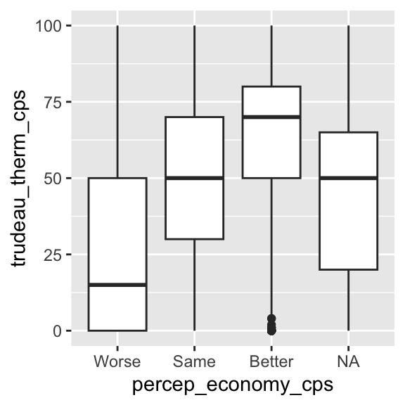
We can also add the shape, size, and color arguments to control the appearance of the points and line.
ggplot( drop_na(ces2019, percep_economy_cps),
aes( x = percep_economy_cps, y = trudeau_therm_cps,
group = 1 ) ) +
# Use the shape, size, and color arguments.
geom_point( stat = "summary", fun = mean, shape = 17, size = 3.5, color = "purple" ) +
geom_line( stat = "summary", fun = mean, color = "purple" )
Below I further edit the line chart with the functions we have learned so far.
ggplot( drop_na(ces2019, percep_economy_cps),
aes( x = percep_economy_cps, y = trudeau_therm_cps,
group = 1 ) ) +
geom_point( stat = "summary", fun = mean, shape = 17, size = 3.5, color = "purple" ) +
geom_line( stat = "summary", fun = mean, color = "purple" ) +
xlab( "Perception of Economy" ) +
ylab( "Feeling Thermometer for Trudeau" ) +
coord_cartesian( ylim = c(0, 100) ) +
scale_y_continuous(breaks = seq(0, 100, 10))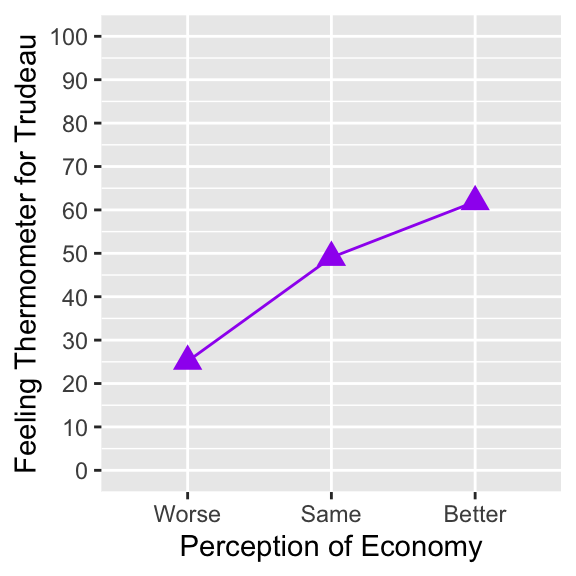
The above line chart of the conditional mean of y across values of x is an appropriate visualization to summarize the conditional distributions of y across x.
5.5 Box Plots: ggplot() + geom_boxplot()
5.5.1 Box Plots
Another appropriate visualization of the conditional distributions of y across different values of x is box plots of y across x. We can draw such box plots by the ggplot() + geom_boxplot() functions with the independent variable (x) and the dependent variable (y) specified in the aes() function inside the ggplot() function, as in the example below.
ggplot( ces2019,
aes( x = percep_economy_cps, # Specify the independent variable ( x = ) and
y = trudeau_therm_cps ) ) + # the dependent variable ( y = ) in the aes()
geom_boxplot() # function inside the ggplot() function.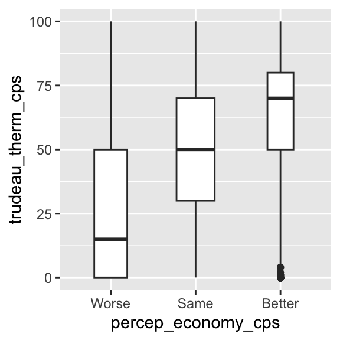
Let’s remove the missing observations by the drop_na() function.
ggplot( drop_na( ces2019, percep_economy_cps ), # Use drop_na() to remove missing observations.
aes( x = percep_economy_cps, y = trudeau_therm_cps ) ) +
geom_boxplot() 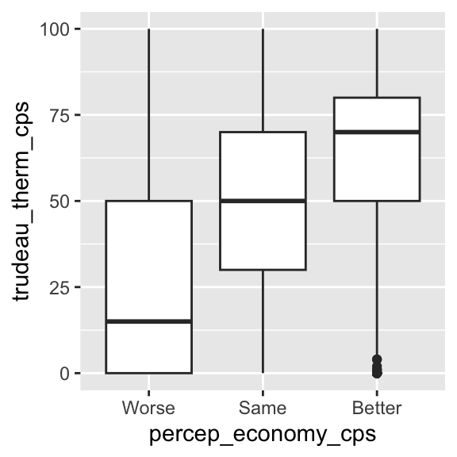
We can also control the width of the boxes by the width argument in the geom_boxplot() function.
ggplot( drop_na( ces2019, percep_economy_cps ),
aes( x = percep_economy_cps, y = trudeau_therm_cps ) ) +
geom_boxplot( width=0.45 ) # Use the width argument to control the width of boxes. 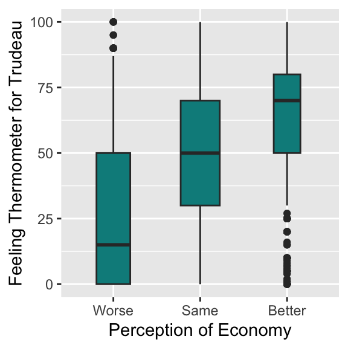
We can also reflect the relative frequency of each category of x in the width of each box by specifying the varwidth argument to equal TRUE in the geom_boxplot() function. The category with a larger number of observations will have a wider width than the category with a smaller number of observations.1
ggplot( drop_na( ces2019, percep_economy_cps ),
aes( x = percep_economy_cps, y = trudeau_therm_cps ) ) +
# Specifying varwidth = TRUE, the width of each box will reflect the relative frequency
geom_boxplot( varwidth = TRUE, width=0.45 ) # (the number of observations) in each category of x. 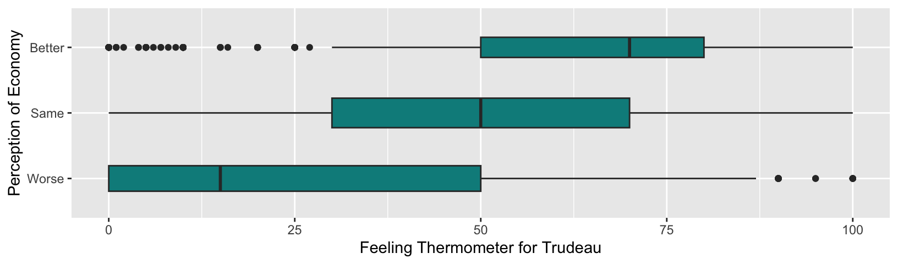
In the above box plots, the width of each box reflects the relative frequency of each category of percep_economy_cps. Recall the bar chart we drew for this variable in Chapter 4, which I have redrawn below for your reference. As you can see, the mode is same, and better has the smallest number of observations. Reflecting this, the width of same is the widest in the box plots above, and that of better is the narrowest.
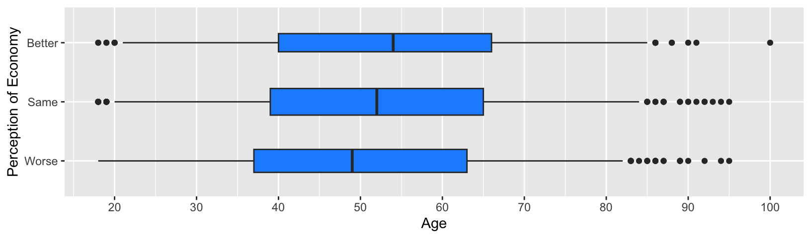
Specifying the varwidth = TRUE may be convenient as we can also see the relative frequency of each category of x at a glance in our box plots.
We can further edit the box plots by the functions we have learned.
ggplot( drop_na( ces2019, percep_economy_cps ),
aes( x = percep_economy_cps, y = trudeau_therm_cps ) ) +
geom_boxplot( varwidth = TRUE, width = 0.45, fill = "cyan4", coef = 0.75 ) +
xlab("Perception of Economy") +
ylab("Feeling Thermometer for Trudeau")
Box plots nicely summarize the conditional distributions of y across x with the conditional medians, IQR, and outliers visualized succinctly.
5.5.2 Horizontal Box Plots
The box plots we saw above are vertical box plots. It is also possible to change them to horizontal box plots. For example, if we want to flip the vertical box plots for the Trudeau thermometer and the perception of economy drawn above to horizontal box plots, we simply add “+ coord_flip()” to the ggplot() function.
ggplot( drop_na( ces2019, percep_economy_cps ),
aes( x = percep_economy_cps, y = trudeau_therm_cps ) ) +
geom_boxplot( varwidth = TRUE, width = 0.45, fill = "cyan4", coef = 0.75 ) +
xlab("Perception of Economy") +
ylab("Feeling Thermometer for Trudeau") +
coord_flip() # Add the coord_flip() function.
We may not want to use the above horizontal box plots for the current purpose because the Trudeau thermometer is used as a dependent variable and we may prefer having the dependent variable on the vertical axis. On the other hand, if our dependent variable is a categorical variable or interval quantitative variable taking a small number of categories or values and our independent variable is an interval quantitative variable taking many values, then horizontal box plots may be useful to visualize their relationship.
Suppose our dependent variable is the perception of economy and the independent variable is respondent’s age (age in the ces2019 data frame). Then, we can visualize their relationship using the horizontal box plots as below.
ggplot( drop_na( ces2019, percep_economy_cps ),
# You need to specify x = dependent_variable, y = independent_variable
# for the current purpose.
aes( x = percep_economy_cps, y = age) ) +
geom_boxplot( varwidth = TRUE, width = 0.45, fill = "dodgerblue", coef = 0.75 ) +
xlab("Perception of Economy") +
ylab("Age") +
coord_flip() + # Add the coord_flip() function.
scale_y_continuous(breaks = seq(20, 100, 10))
An important trick here is that you need to specify your dependent variable for x = and your independent variable for y = in the aes() function because these variables are specified for vertical box plots first, and then they are flipped to horizontal box plots.
5.6 Conditional Means & Medians
In the previous sections, we visualized the conditional means using a line chart and the conditional medians using boxplots. However, we have not computed the numerical values of these summary statistics. Let’s learn how to compute actual values of the conditional means and medians.
5.6.1 Conditional Means
To compute the conditional means and medians, it is convenient to use the pipe operator (|>) together with the group_by() function and the summarize() function in tidyverse.2
For brevity, let me first present the code to compute the conditional means without explanation. I will explain it line by line later.
ces2019 |>
group_by(percep_economy_cps) |>
summarize( cond_mean = mean(trudeau_therm_cps, na.rm = TRUE) )# A tibble: 4 × 2
percep_economy_cps cond_mean
<fct> <dbl>
1 Worse 25.1
2 Same 49.1
3 Better 61.9
4 <NA> 45.0The above code produced a table of conditional means of trudeau_therm_cps for each category of percep_economy_cps. The conditional means are named cond_mean.
The pipe operator (|>) sends an R object on its left-hand side into a function on its right-hand side as an argument. We say it pipes an R object to a function.
Below is a line-by-line explanation of how the above code works.
ces2019 |>
# The ces2019 data frame is piped to the group_by() function by the pipe operator (|>).
group_by(percep_economy_cps) |>
# Observations in the ces2019 data frame are grouped by the categories of percep_economy_cps
# by the group_by() function, and its output (the grouped data frame) is piped to the
# summarize() function by the pipe operator (|>).
summarize(cond_mean = mean(trudeau_therm_cps, na.rm = TRUE))
# The summarize() function applies the mean() function to trudeau_therm_cps for each
# group in the ces2019 data frame created by the group_by() function. This generates
# the conditional means for each category of percep_economy_cps and assigns them to
# a new object named cond_mean.5.6.2 Conditional Medians
Similarly, we can compute the conditional medians. We just need to replace the mean() function in the above code with the median() function.
ces2019 |>
group_by(percep_economy_cps) |>
summarize(cond_median = median(trudeau_therm_cps, na.rm = TRUE) )# A tibble: 4 × 2
percep_economy_cps cond_median
<fct> <dbl>
1 Worse 15
2 Same 50
3 Better 70
4 <NA> 505.6.3 Pipe Operator (|>) for Sequantial Operations
The pipe operator (|>) is convenient when we create R objects sequentially by applying different R functions in each step. For example, in Section 5.2.6, we have edited the crosstab by creating R objects sequentially. For your reference, I have recreated the code below.
tab <- table( ces2019$satisfied_fedgovt2,
ces2019$percep_economy_cps )
ptab <- prop.table(tab, 2)
ptab_total <- addmargins(ptab, 1)
round(ptab_total, 4) * 100
Worse Same Better
Very 1.30 3.87 12.38
Fairly 16.42 48.27 59.78
Not Very 30.62 31.99 22.03
Not At All 51.65 15.88 5.82
Sum 100.00 100.00 100.00In this example, we have sequentially created tab, ptab, and ptab_total. Then, we have finally applied the round() function to ptabl_total and multiply it by 100 to print the crosstab in percentage rounded to two decimal places.
The same operations can be done using the pipe operator (|>) as below. For brevity, I first present the code without explanation and will explain it line by line later.
table( ces2019$satisfied_fedgovt2,
ces2019$percep_economy_cps ) |>
prop.table(2) |>
addmargins(1) |>
round(4) * 100
Worse Same Better
Very 1.30 3.87 12.38
Fairly 16.42 48.27 59.78
Not Very 30.62 31.99 22.03
Not At All 51.65 15.88 5.82
Sum 100.00 100.00 100.00Below is a line by line explanation for this code. As this example clarifies, the R object sent by the pipe operator (|>) to a function is used as the first argument of this function.
# First, use the table() function to produce the raw crosstab.
table( ces2019$satisfied_fedgovt2,
ces2019$percep_economy_cps ) |>
# Then, use the pipe oprator ("|>") to send the ouput of the table () function
# to the first argument of the prop.table() function.
prop.table(2) |>
# Use the pipe oprator ("|>") again to send the ouput of the prop.table () function
# to the first argument of the addmargins() function.
addmargins(1) |>
# Use the pipe oprator ("|>") one more time to send the ouput of the addmargins () function
# to the first argument of the round() function.
round(4) * 100
Worse Same Better
Very 1.30 3.87 12.38
Fairly 16.42 48.27 59.78
Not Very 30.62 31.99 22.03
Not At All 51.65 15.88 5.82
Sum 100.00 100.00 100.00In the above example, we have created and printed the crosstab in percentage rounded to two decimal places, but have not assigned this result to a specific object. Of course, we can use the assignment operator (<-) to create it. Below we assign this crosstab to an object named percent_tab.
percent_tab <- table( ces2019$satisfied_fedgovt2,
ces2019$percep_economy_cps ) |>
prop.table(2) |>
addmargins(1) |>
round(4) * 100 Then, we can use the print() function to print the crosstab on the Console.
print(percent_tab)
Worse Same Better
Very 1.30 3.87 12.38
Fairly 16.42 48.27 59.78
Not Very 30.62 31.99 22.03
Not At All 51.65 15.88 5.82
Sum 100.00 100.00 100.00Or we can simply type in the name of the object, precent_tab, in the Console to do the same.
percent_tab
Worse Same Better
Very 1.30 3.87 12.38
Fairly 16.42 48.27 59.78
Not Very 30.62 31.99 22.03
Not At All 51.65 15.88 5.82
Sum 100.00 100.00 100.00